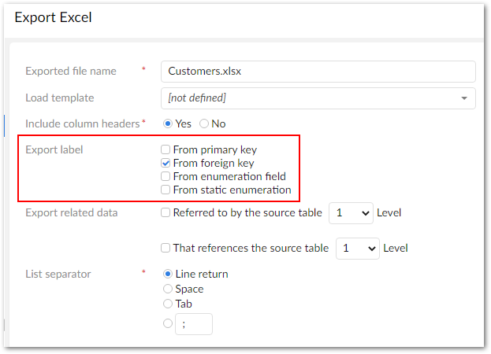
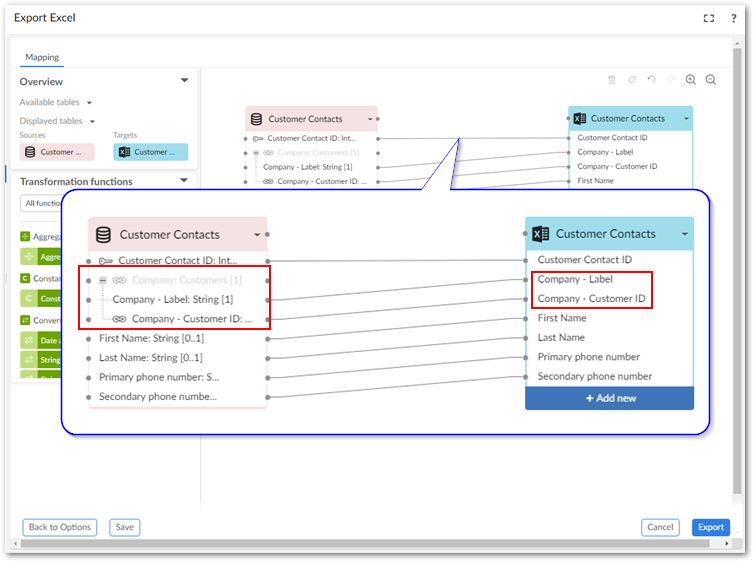
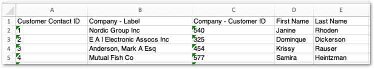
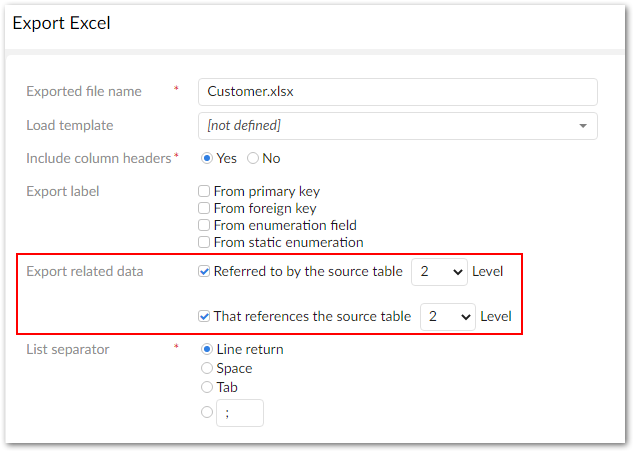
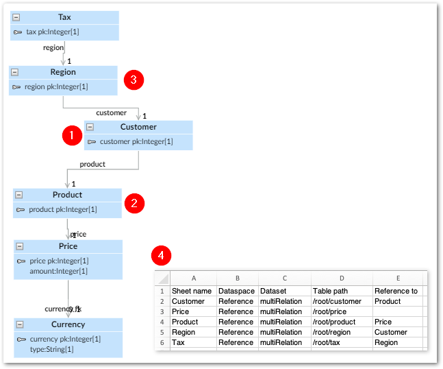

Instructional details for some of the add-on's export options and example output are included in the following sections:
When exported data includes a primary key, foreign key, or enumeration, the resulting file might be difficult to parse. The values contained in these fields are often numbers or other identifiers, and make it challenging to extract meaningful information. To alleviate this, the add-on allows you to export the labels for these fields. Note, that labels for these fields must be defined in the data model and can only be set by someone with administrative access to edit the data model. See Setting labels below for high-level information on where to set the labels.
To include labels in an exported file:
Initiate the export process.
Label export options are available at the dataset and table levels for CSV and Excel, but only the table level for SQL. This example demonstrates exporting from one table to Excel and including labels from a foreign key. With the exception of the following differences, the process and results are similar for the other export formats and label options:
The option to export static enumerations is only available for Excel export.
When exporting at the dataset level: each sheet in an Excel file will contain data for one table included in the export.
If you do not have permission to view a field it is not included in the export.
See Exporting a table or Exporting multiple tables for detailed instructions on exporting.
Choose the types of labels to export by selecting the corresponding options.
You cannot use a transformation function on a field that is a static enumeration.

Optionally, change mappings.
As shown in the example below, you can find the label mappings in an expandable section in the source table.

Complete the export process.
The following image shows the file resulting from the export with the label column (Company - Label) included:

If you have administrative access to edit a data model in the Data Model Assistant (DMA), you can determine the exported labels for each field type by adding a label in the following locations:
Enumerations: select the field and navigate to Simple controls > Enumeration > Items > Label.
Primary keys: select the table and navigate to Advanced properties > Table > Presentation > Record labeling.
Foreign keys: select the field and navigate to Advanced controls > Foreign key constraint > Record labeling.
You can view the TIBCO EBX® product documentation for more details on this topic.
You can export data from related tables when exporting to Excel or CSV formats. You have the option of including data from related tables up to 5 levels from the main source table (the table where you run the export service). Only data related to records selected for export in the export's source table are exported.
When exporting to:
CSV: The add-on exports a ZIP file containing individual CSV files. Each file contains data from one table and one of the files includes metadata about the related tables included in the export.
Excel: The add-on exports a single Excel file. The first sheet in the file contains the export's source data. Each additional sheet—one for each table—contains the related data. The final sheet in the file contains metadata about the related tables included in the export.
To export related data:
Initiate the export process for CSV or Excel.
See Exporting a table for detailed instructions on exporting.
Label export options are only available at the table level.
Include data from related tables using one of the following options:
Select the related data to export using the following options:
Referred to by the source table
That references the source table
Optionally, use the Level drop down menu to determine how much related data should be included.

Optionally, change or update mappings.
Complete the export process.
The following image and list include a data model diagram and export results to highlight the behavior of exporting related data:

1) Source table | The export service was run from the Customer table. |
2) Referenced by the source table | The Customer table holds a FK to the Product table, but not directly to Price, or Currency. The related data from Price was included in the export because it was within the number of levels specified (2), whereas Currency was not. |
3) Tables that reference the source table | Data from the Region table, which has a direct FK to Customer, and Tax table was included in the export. |
4) Results | The reference sheet includes metadata about all related tables included in the export. |